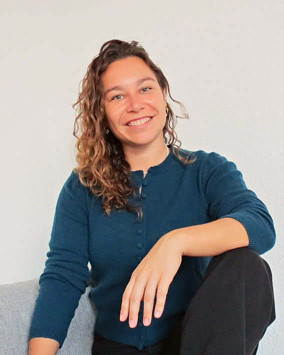

Educación financiera para la vida real
Conviértete en ciudadano financiero.
Un curso práctico para entender cómo funciona el dinero, tomar decisiones con criterio y construir ingresos que van más allá de tu sueldo.
Lista de espera
No te quedes sin tu plaza.
Te avisamos por email en cuanto se abra el acceso.
El problema
Nadie te dio el manual
Pasaste años estudiando y ni una sola clase te explicó cómo gestionar tu dinero, cómo rentabilizar tu cartera, cómo tomar decisiones sobre tu patrimonio con criterio, qué tipos de inversiones hay o cómo invertir. Así que aprendiste a base de errores. O, peor, dejaste de intentarlo y con ello estás perdiendo dinero.
El programa
Cinco bloques para construir tu ciudadanía financiera
Cada bloque combina teoría y ejercicios prácticos para integrarlo.
Percepción financiera
Tu perfil personal con el dinero y cómo mejorarlo, creencias limitantes y las 3 habilidades del dinero en profundidad.
Gestión de las finanzas personales
Activos y pasivos en tus finanzas personales, tu flujo de caja, el control de gastos y tu balance personal para aprender a gestionar tu dinero de forma excelente.
Inversión de alta rentabilidad
Los 5 productos financieros que te permiten invertir con alta rentabilidad, el análisis fundamental y aprender a tener criterio de inversión.
La inversión técnica
Análisis técnico, tendencias gráficas, estructura de mercado y cuándo invertir.
Crea tu cartera
Ejemplos reales de principio a fin y cómo montar tu propia cartera de inversión.

Quién soy
Me llamo Alba, soy inversora y consultora estratégica. Vengo de la banca de inversión y llevo más de quince años analizando empresas. Mi padre me enseñó a leer un balance a los catorce años.
Hace cuatro años dejé la banca para emprender. Varios proyectos después, tengo clara una cosa: entender el dinero no es un talento con el que se nace.
Es un método, y se aprende.
Creé Ciudadano Financiero porque falta educación financiera. Y en este método, que junta mi experiencia en el mercado bursátil, mis aprendizajes y varias formaciones, vas a aprender a gestionar e invertir tu dinero como nunca antes te han enseñado.
Lo que dicen
Quienes ya lo han probado
Alumnos de la primera edición.
“Una clase magistral sobre el mundo de las empresas y sus fluctuaciones en los mercados.”
Marta“Explicas de forma muy clara y muy sencilla. Esto genera un cambio de mentalidad muy grande.”
Jorge“Brutal el curso de Ciudadano Financiero.”
Gloria“Me ha gustado la parte de inversión.”
RubénPara quién es
Este curso es para ti si...
Sí, quiero aprender a gestionar e invertir mi dinero de forma exponencial
Preguntas frecuentes
Antes de empezar
¿Necesito conocimientos previos de finanzas?
No, este curso está pensado para empezar desde cero. Si ya tienes conocimientos previos, te permitirá profundizar más y alcanzar mayores rentabilidades.
¿Cuánto dura?
5 semanas con acompañamiento.
No tengo tiempo, ¿cómo lo puedo hacer?
Te llevará entorno a 2 horas a la semana, pudiendo realizarlo en cualquier momento. Si no tienes la disciplina para este mínimo, no esperes tener libertad financiera.
¿Cuándo es el próximo lanzamiento?
Todavía no hay fecha fijada. Estamos cursando la primera edición que termina el 23 de noviembre. A partir de esa fecha, te avisaremos solo si estás en la lista de espera.
¿Cuál es el formato?
La formación es grabada, con recursos online sobre los que trabajar. Hay directos online para dudas y avances; quedarán grabados.
Las 3 habilidades del dinero
8 de cada 10 personas no tienen un problema de ingresos. Tienen un problema de habilidades.
Según el Banco de España, solo 1 de cada 5 adultos en España responde bien a tres preguntas básicas de finanzas. Y manejar bien el dinero se reduce, precisamente, a tres habilidades. Casi nadie domina bien las tres.
Y esto no se arregla ganando más. Se arregla sabiendo cuál de las tres te está fallando.
¿Quieres saber si dominas las tres?
Descúbrelo en 8 minutos
Las 3 habilidades del dinero →